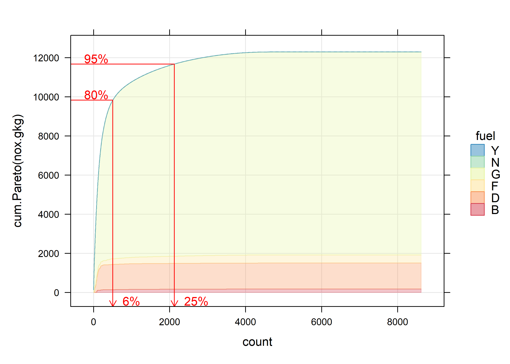

R code for the analysis of vehicle emissions remote sensing systems (VERSS).
In development package
Installation
You can install the development version of different.tan from GitHub with:
# install.packages("devtools")
devtools::install_github("karlropkins/different.tan")Contributing
different.tan is an in-development package, and contributions are very welcome. We are using tidyverse contribution guidance regarding code of conduct but are not strict as them regarding coding style… Contributions
Examples
Load different.tan package and get some VERSS data, e.g. from the Denver FEAT Archive:
require(different.tan)
feat <- import_featdata("Fresno 21")A quick Pareto analysis:
plot_Pareto(nox.gkg, fuel, data=feat,
Pareto = "cum.Pareto", transpose.y.percent=c(80, 95))
Here, for example, we see that 95% of observed NOx emissions were produced by about 25% of passing cars, and 80% were produced about 6% of passing cars.